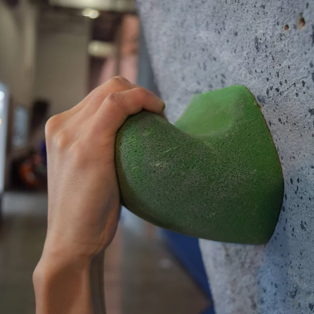

Holds
Holds make or break a climbing experience. Having nice good holds allows for someone to enjoy and easily maneuver up a climb. Sucky holds on the other hand can cause frustration, anger, and pure hatred towards a climbing route. There are 5 main hold types in climbing
- Jugs
- Crimps
- Slopers
- Pinches
- Pockets
Jugs
The greatest hold you will ever encounter. Jugs were made to fit in a persons hand. The shape is perfect for gripping and the easiest grip you will ever find. Jugs are used in most low grade problems to get beginners into climber. They however are extremely uncommon the higher in difficulty you go.
Crimps
Crimps are holds made straight from hell. They only give you so much space for your hand to grab, maybe two pads or less. Crimps are a very common hold to find the further you get into climbing. They range in size but all suck relative to how small they go.
Slopers
Slopers are an interesting climbing hold. Either you love them or you had them. They are made for you use smack your hand on and apply as much force as possible to stick. Slopers are for those that trust their ability to assert force on an object and that can trust friction. They are one of my personal favorite holds since they do not kill my fingers the way crimps do.
Pinches
Pinches are a hate them or love them type of hold. A pinch is what it sounds like, you pinch the hold with your hands. The issue is that a pinch requires the same strength as a slopper and a crimp combined in some situations so it results in relying on many hand muscles that most people are not comfortable with using. In the good words of a wise man he once said "If you do not have the Lobster claws, you can not do the pinches" - Richard.
Pockets
Pockets are an interesting bread of their own. Some pockets are nice and big and have the ability to give an amazing hold for climbing as if they were a jug. Other pockets come straight from pain city to give someone a hard time. Pockets refer to deep enough holes that one can get a few fingers into. For a pocket the most common in mid tier climbing require a climber to use two fingers to hold themselves to. Single finger pockets are also used however not warranted since they can lead to tendon tearing